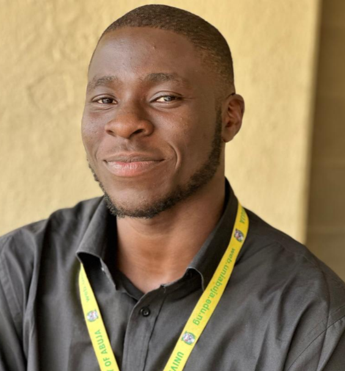

Nnakwuzie Uchenna Prince Michael

OBJECTIVE STATEMENT
Becoming one of the best programmers in the world.
Education
- Primary 2004 - 2010
- Secondary 2011 - 2017
- University 2019 - 2023
Work Experience
- worked at my uncles office 2017 - 2025
Skill
- singing
- Web development
- public speaking
Award
- First School Leaving certificate - 2010
- West African Examination Council - 2017
- Bachalor of Science - 2024
Others
My hobby
About Me
Contact Me